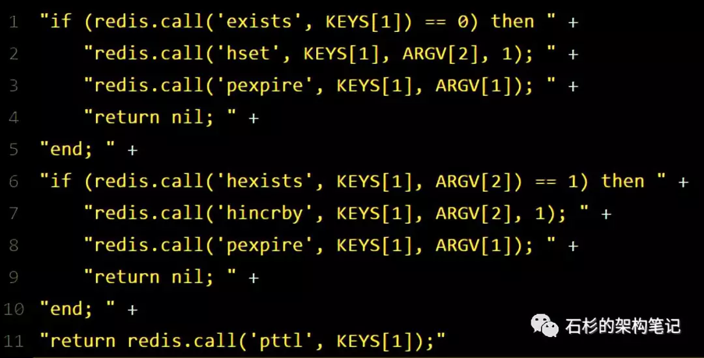
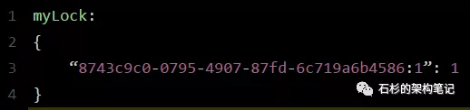
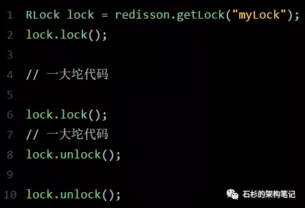
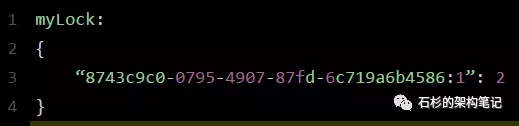

写在前面
现在面试，一般都会聊聊分布式系统这块的东西。通常面试官都会从服务框架（Spring Cloud、Dubbo）聊起，一路聊到分布式事务、分布式锁、ZooKeeper等知识。
所以咱们这篇文章就来聊聊分布式锁这块知识，具体的来看看Redis分布式锁的实现原理。
说实话，如果在公司里落地生产环境用分布式锁的时候，一定是会用开源类库的，比如Redis分布式锁，一般就是用Redisson框架就好了，非常的简便易用。
大家如果有兴趣，可以去看看Redisson的官网，看看如何在项目中引入Redisson的依赖，然后基于Redis实现分布式锁的加锁与释放锁。
下面给大家看一段简单的使用代码片段，先直观的感受一下：

怎么样，上面那段代码，是不是感觉简单的不行！
此外，人家还支持redis单实例、redis哨兵、redis cluster、redis master-slave等各种部署架构，都可以给你完美实现。
Redisson实现Redis分布式锁的底层原理
好的，接下来就通过一张手绘图，给大家说说Redisson这个开源框架对Redis分布式锁的实现原理。

加锁机制
咱们来看上面那张图，现在某个客户端要加锁。如果该客户端面对的是一个redis cluster集群，他首先会根据hash节点选择一台机器。
这里注意，仅仅只是选择一台机器！这点很关键！
紧接着，就会发送一段lua脚本到redis上，那段lua脚本如下所示：

为啥要用lua脚本呢？
因为一大坨复杂的业务逻辑，可以通过封装在lua脚本中发送给redis，保证这段复杂业务逻辑执行的原子性。
那么，这段lua脚本是什么意思呢？
KEYS[1]代表的是你加锁的那个key，比如说：
RLock lock = redisson.getLock(“myLock”);
这里你自己设置了加锁的那个锁key就是“myLock”。
ARGV[1]代表的就是锁key的默认生存时间，默认30秒。
ARGV[2]代表的是加锁的客户端的ID，类似于下面这样：
8743c9c0-0795-4907-87fd-6c719a6b4586:1
给大家解释一下，第一段if判断语句，就是用“exists myLock”命令判断一下，如果你要加锁的那个锁key不存在的话，你就进行加锁。
如何加锁呢？很简单，用下面的命令：
hset myLock
8743c9c0-0795-4907-87fd-6c719a6b4586:1 1
通过这个命令设置一个hash数据结构，这行命令执行后，会出现一个类似下面的数据结构：

上述就代表“8743c9c0-0795-4907-87fd-6c719a6b4586:1”这个客户端对“myLock”这个锁key完成了加锁。
接着会执行“pexpire myLock 30000”命令，设置myLock这个锁key的生存时间是30秒。
好了，到此为止，ok，加锁完成了。
锁互斥机制
那么在这个时候，如果客户端2来尝试加锁，执行了同样的一段lua脚本，会咋样呢？
很简单，第一个if判断会执行“exists myLock”，发现myLock这个锁key已经存在了。
接着第二个if判断，判断一下，myLock锁key的hash数据结构中，是否包含客户端2的ID，但是明显不是的，因为那里包含的是客户端1的ID。
所以，客户端2会获取到pttl myLock返回的一个数字，这个数字代表了myLock这个锁key的剩余生存时间。比如还剩15000毫秒的生存时间。
此时客户端2会进入一个while循环，不停的尝试加锁。
watch dog自动延期机
客户端1加锁的锁key默认生存时间才30秒，如果超过了30秒，客户端1还想一直持有这把锁，怎么办呢？
简单！只要客户端1一旦加锁成功，就会启动一个watch dog看门狗，他是一个后台线程，会每隔10秒检查一下，如果客户端1还持有锁key，那么就会不断的延长锁key的生存时间。
可重入加锁机制
那如果客户端1都已经持有了这把锁了，结果可重入的加锁会怎么样呢？
比如下面这种代码：

这时我们来分析一下上面那段lua脚本。
第一个if判断肯定不成立，“exists myLock”会显示锁key已经存在了。
第二个if判断会成立，因为myLock的hash数据结构中包含的那个ID，就是客户端1的那个ID，也就是“8743c9c0-0795-4907-87fd-6c719a6b4586:1”
此时就会执行可重入加锁的逻辑，他会用：
incrby myLock
8743c9c0-0795-4907-87fd-6c71a6b4586:1 1
通过这个命令，对客户端1的加锁次数，累加1。
此时myLock数据结构变为下面这样：

大家看到了吧，那个myLock的hash数据结构中的那个客户端ID，就对应着加锁的次数
释放锁机制
如果执行lock.unlock()，就可以释放分布式锁，此时的业务逻辑也是非常简单的。
其实说白了，就是每次都对myLock数据结构中的那个加锁次数减1。
如果发现加锁次数是0了，说明这个客户端已经不再持有锁了，此时就会用：
“del myLock”命令，从redis里删除这个key。
然后呢，另外的客户端2就可以尝试完成加锁了。
这就是所谓的分布式锁的开源Redisson框架的实现机制。
一般我们在生产系统中，可以用Redisson框架提供的这个类库来基于redis进行分布式锁的加锁与释放锁。
上述Redis分布式锁的缺点
其实上面那种方案最大的问题，就是如果你对某个redis master实例，写入了myLock这种锁key的value，此时会异步复制给对应的redis slave实例。
但是这个过程中一旦发生redis master宕机，主备切换，redis slave变为了redis master。(但是这个加锁的key还没有来得及同步到slave节点)。
接着就会导致，客户端2来尝试加锁的时候，在新的redis master上完成了加锁，而客户端1也以为自己成功加了锁。
此时就会导致多个客户端对一个分布式锁完成了加锁。
这时系统在业务语义上一定会出现问题，导致各种脏数据的产生。
所以这个就是redis cluster，或者是redis master-slave架构的主从异步复制导致的redis分布式锁的最大缺陷：在redis master实例宕机的时候，可能导致多个客户端同时完成加锁。